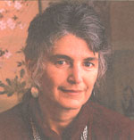

MOTHERS INTERVIEW
Vicki Robin speaks with Betsey Model on the principles of frugality
As we type this story, the high-pitched and strained voices of newsmen and women on the radio are beginning to betray a less than journalistic anxiety in the wake of a panic selling session on Wall Street. The market has plummeted five hundred points in a single day and the paper mansions and yachts built in the bull market of the past year are blowing in the wind.
After the financial boom and bust of the '80s, the catch-phrase on many a Mercedes bumper-sticker was "The One Who Dies With the Most Toys Wins." It's incongruous that, just a few years later, one of the fastest selling how-to books on the New York Times bestseller list was not about how to get ahead, get more money, get a job, or get an image. It was about how to get by on less ...less spending, less negative environmental impact, and less dependence on the government or corporate America for financial security.
In 1992, former Wall Street financial analyst Joe Dominguez and his partner, Vicki Robin, published Your Money or Your Life, a national bestseller that addressed the question "Is this all there is?" Through a nine-step program, Dominguez and Robin showed readers how to live well on less, get out of debt and, most importantly, develop savings. Now published in four languages and distributed around the world, the book-and its authors-are often credited with kicking off the "voluntary simplicity" movement. Robin, with her late partner Joe Dominguez, formed the Seattle-based nonprofit New Road Map Foundation, traveled the country on speaking engagements, and made over 400 media appearances encouraging consumers to stop consuming. Her philosophy is one many MOTHER readers have embraced most of their lives. But many more write us each month asking for concrete advice on how to make their lives simpler and more fulfilling. Robin's work has been to take these principles out of some idealistic realm of abstract thinking and teach people step-by-step how to move away from a consumer existence.
Attractive, articulate, and neatly dressed, Robin, 52, looks and sounds more like a $50,000 executive recruiter than the woman once dubbed the "prophet of consumption-downsizers" by the New York Times. She's a dynamic speaker and a persuasive voice on the subject of consumerism's impact on our quality of life and the life of our planet. A cum laude graduate of Brown University, Ms. Robin is a member of the Task Force on Population and Consumption on the President's Council on Sustainable Development, a founding member and Trustee of Sustainable Seattle, and author of a series of booklets including "All Consuming Passion: Waking Up From the American Dream" and "How Earth Friendly Are You? A Lifestyle Assessment Questionnaire."
Betsy Model for Mother Earth News: What exactly is the New Road Map Foundation?
VICKI ROBIN: It's an all-volunteer, non-profit, educational and charitable foundation where we teach people tools for shifting to low-consumption, high-fulfillment lifestyles. None of the people who work at New Road Map are paid. All of our proceeds from seminars or books or educational programs are donated to non-profit groups working toward a sustainable world. We're about frugality and about how to learn to save without doing without much of what truly makes you happy.
MEN: Trends Research Institute, a source used by businesses, government and educators to track trends and habits, called "Voluntary Simplicity" one of the ten fastest growing trends in America. In fact, they said "never before in the Institute's seventeen years of trend tracking has a societal trend grown so quickly, spread so broadly, and been embraced so eagerly." Do you agree?
ROBIN: I'm hopeful! I think there's a new segment of the American public asking themselves "is this all there is?" and not liking the answer. As a nation, as consumers, we spend too much-way too much-and aren't any happier or richer in health or in our family lives... but I think people are catching on. I think people are looking for a better way, a way to feel better about the hours they spend away from home working, about the time they spend with their families and they are beginning to realize that if they want security financially, it's going to have to come directly from them, not from an outside source or the government. I think the most exciting thing is that people are realizing that spending less, saving more, and redirecting their energies and personal resources doesn't mean they're losing out. Frugality is not about doing without. It's not about a loss of beauty or grace or about not having those things in your life. It's about living well on less and by living within your means. And living within our means isn't just about money but about our natural resources and our planet's resources.
MEN: In spite of asking people to go to their libraries and borrow it, more than 400,000 copies of Your Money or Your Life have sold and now it's taking off in Europe and elsewhere. The book is five years old ...how do you explain its continuing popularity?
Step 1: Making Peace with the Past
A: How much have you earned in your life?
HOW:
Social Security Administration-Request for Statement of Earnings. Copies of federal or state income tax returns. Paycheck stubs; employers' records.
WHY:
Gives a clear picture of how powerful you are in bringing money into your life. Eliminates vagueness in this arena. Instills confidence, facilitates goal-setting. This is a very basic, fundamental practice for any business-and you are a business.
B: What have you got to show for it?
HOW:
List a current market value to everything you own. List everything you owe. Deduct liabilities from assets to get net worth.
WHY:
You can never know what is enough if you don't know what you have. You might find that you have a lot of material possessions that are not bringing you fulfillment, and you might want to convert them to cash. This is a very basic, fundamental practice for any business-and you are a business.
Step 2: Being in the Present-Tracking Your life Energy
A: How much are you trading your life energy for? Establish the actual costs in time and money required to maintain your job, and compute your real hourly wage.
HOW:
Deduct from your gross weekly income the costs of commuting and job costuming; the extra cost of at-work meals; amounts spent for decompressing, recreating, escaping, and vacationing from work stress; job-related illness; and all other expenses associated with maintaining yourself on the job. Add to your work-week the hours spent in preparing yourself for work, commuting, decom pressing, recreating, escaping, vacationing, shopping to make you feel better since your job feels lousy, and all other hours that are linked to maintaining your job. Divide the new, reduced weekly dollar figure by the new, increased weekly hour figure; this is your real hourly wage. Individuals with variable incomes can get creative-take monthly averages, a typical week, whatever works for you.
WHY:
This is a very basic business practice. You are in the business of selling the most precious resource in existence: your life energy. You had better know what you are selling it for. The number that results from this step-your real hourly wage-will become a vital ingredient in transforming your relationship with money.
B. Keep track of every cent that comes into or goes out of your life.
HOW:
Devise a record-keeping system that works for you (such as a pocket-sized memo book). Record daily expenditures accurately. Record all of your income.
WHY:
This is a very basic, fundamental practice for any business. You are in the business of trading the most precious resource in existence your life energy. This record book shows in detail what you are trading it for.
Step 3: Where Is it All Going?
Every month create a table of all income and all expenses within categories generated by your own unique spending pattern. Balance your monthly income and monthly outgo totals. Convert "dollars" spent in each category to "hours of life energy," using your real hourly wage as computed in Step 2.
WHY:
This Monthly Tabulation will be an accurate portrait of how you are actually living. This Monthly Tabulation will provide a foundation for the rest of this program.
Step 4: Three Questions that Will Transform Your Life
On your Monthly Tabulation, ask these three questions of each of your category totals-expressed as hours of life energy-and record your responses:
1. Did I receive fulfillment, satisfaction, and value in proportion to life energy spent?
2. Is this expenditure of life energy in alignment with my values and life purpose?
3. How might this expenditure change if I didn't have to work for a living?
At the bottom of each category, make one of the following marks:
Mark a minus (-) sign (or a down arrow) if you did not receive fulfillment proportional to the hours of life energy you spent in acquiring the goods and services in that category, or if that expenditure was not in full alignment with your values and purpose or if you could see expenses in that category diminishing after Financial Independence.
Mark a plus (+) sign (or an up arrow) if you be lieve that upping this expenditure would in, - crease fulfillment, would demonstrate greater personal alignment, or would increase after Financial Independence. Mark a (0) if that cate gory is just fine on all counts.
HOW:
With total honesty.
WHY
This is the core of the program. These questions will clarify and integrate your earning, spending, values, purpose, sense of fulfillment, and your integrity. This will help you discover what is enough.
Step 5: Making Life Energy Visible
Create a large Wall Chart plotting the total monthly income and total monthly expenses from your Monthly Tabulation. Put it where you will see it every day.
HOW:
Get a large sheet of graph paper, 18 by 22 inches to 24 by 36 inches with 10 squares to the centimeter or 10 squares to the inch Choose a scale that allows plenty of room above your highest projected monthly expenses or monthly income. Use different-colored lines for monthly expenses and monthly income.
WHY:
It will show you the trend in your financial situation and will give you a sense of progress over time, and the transformation of your relationship with money will be obvious. You will see your expense line go down as your fulfillment goes up-the result of "instinctive," automatic lowering of expenses in those categories you labeled with a minus. This Wall Chart will become the picture of your progress toward full Financial Independence, and you will use it for the rest of the program. It will provide inspiration, stimulus, support, and gentle chiding.
Step 6: Valuing Your Life Energy-Minimizing Spending
Learn and practice intelligent use of your life energy (money), which will result in lowering your expenses and increasing your savings. This will create greater fulfillment, integrity, and alignment in your life.
HOW:
Ask yourself the three questions in Step 4 every month. Learn to define your true needs. Be conscious in your spending. Master the techniques of wise purchasing Research value quality, and durability.
WHY:
You are spending your most precious commodity-your life energy. You have only a finite amount left. You are consuming the planet's precious resources-there is only a finite amount left. You cannot expect your children-or your government-to "know the value of a buck" if you don't demonstrate it. "Quality of life" often goes down as "standard of living" goes up. There is a peak to the Fulfillment Curve-spending more after you've reached the peak will bring less fulfillment.
Step 7: Valuing Your Life Energy-Maximizing Income
Respect the life energy you are putting into your job. Money is simply something you trade your life energy for. Trade it with purpose and integrity for increased earnings.
HOW:
Ask yourself: Am I making a living, or dying? Examine your purposes for paid employment. Break the link between work and wages.
WHY:
You have only X number of hours left in your life. Determine how you want to spend those remaining hours. Breaking the robotic link between who you are and what you do for a "living" will free you to make more fulfilling choices.
Step 8: Capital and the Crossover Point
Each month apply the following equation to your total accumulated capital, and post the monthly independence in come as a separate line on your Wall Chart:
capital x current long-term interest rate Monthly investment
12 months income
HOW:
Find the long-term interest rate by looking at the interest of the thirty-year treasury bonds in the treasury bond table of the Wall Street Journal or a big-city newspaper. After a number of months on the program, your total monthly expense line will have established a smaller zigzag pattern at a much lower level than when you started. With a light pencil line, project the total monthly expense line into the future. After a number of months on the program, your monthly investment income line will have begun to move up from the lower edge of the chart. (If you have actually been investing this money as outlined in Step 9, the line will be curving upward-the result of the magic of compound interest.) With a light pencil line, project the monthly investment income curve into the future. At some point in the future it will cross over the total monthly expenses line. That is the Crossover Point. You will gain inspiration and momentum when you can see that you need to work for pay for only a finite period of time.
WHY:
At the Crossover Point you will be financially independent. The monthly income from your invested capital will be equal to your actual monthly expenses. You will have enough. Your options are now wide open.
Step 9: Managing Your Finances
The final step to financial independence: become knowledgeable and sophisticated about long-term income-producing investments. Invest your capital in such a way as to provide an absolutely safe income, sufficient to meet your basic needs for the rest of your life.
HOW:
Empower yourself to make your own investment decisions by narrowing the focus to the safest, nonspeculative, long-duration fixed-income securities, such as U.S. treasury bonds and U.S. government agency bonds. Temper the prevailing irrational fears about inflation with clear thinking and increased awareness. Cut out the high expenses, fees, and commissions of middlemen and popularly marketed investment "products." Set up a financial plan using three pillars: Capital: The income-producing core of your Financial Independence. Cushion: Enough ready cash, earning bank interest, to cover six months of expenses. Cache: The surplus of funds resulting from your continued practice of the nine steps. May be used to finance your service work, reinvested to produce an endowment fund, used to replace high cost items, used to compensate for occasional inroads of inflation, given away, etc.
Adapted from Your Money or Your Life (Penguin Books, 1992) by Joe Dominguez and Vicki Robin. Copyright © Vicki Robin and Joe Dominguez, 1992.
ROBIN: I think partly it's because my late partner, Joe Dominguez, and I proved to be living, walking proof that living on less, much less, can be done successfully. We each managed on less than $6,000 per year (well below the federal poverty level) and we lived well. I live in a nice home, in a nice neighborhood and, I think, I dress nicely. I live within my means. I take care of what I have. I use something until it wears out and then I replace it with something used or something I've found for less money.
SINCE 1840, AMERICANS alone have used up as large a share of the earth's mineral resources as all previous generations combined.
That's the message to the people reading Your Money or Your Life or who are participating in group workshops or workplace seminars. That and save, save, save. You're responsible for you and for the security you want to feel. You're responsible for consuming less energy and less natural resources. You're responsible for spending more time with your family or in community service or in whatever makes more sense for you than spending it in line buying something you probably don't need but which an advertising executive somewhere has convinced you to buy. Partly because the workplace plays such a big role in most people's lives-as a means of income, as somewhere they spend large amounts of time and energy, as a place that consumes a lot of resources-the New Road Map Foundation has begun teaching the frugality seminars to those companies who want to spread the word and maybe want to change their own spending habits. We've taught the course at larger companies like Weyerhaeuser and at smaller ones, including, interestingly enough, a recent one at a firm specializing in corporate job outplacement.
MEN: How do you feel about the term "voluntary simplicity?"
ROBIN: I think it's become a popular phrase ...one that consumers have caught on to. I personally like the term "downshifting:" I think that the term "voluntary simplicity" is fine but there's a bigger picture. . .voluntary simplicity is beautiful, but I see it as an ethic, a great personal ethic. The larger picture is when you bring into focus our impact on the earth and the environment by our everyday consumption habits. When they published Your Money or Your Life in Spain, they referred to it as a book about this movement in North America towards downshifting. I'm really comfortable with that term. Some wonderful people doing great things and waking the public up-people like Duane Elgin who wrote Voluntary Simplicity and Cecile Andrews who authored The Circle of Simplicity have brought the phrase "voluntary simplicity" to the average consumer and that's terrific. I'm not overly concerned with what people call it as long as they practice it.
MEN: You mentioned earlier that the statistics scare you. . .which statistics and why?
ROBIN: Oh gosh, it's hard to know where to begin! There's been a rise in per capita consumption in the United States of 45 percent during the last 20 years. This is at a time when nearly half of all Americans have less than $10,000 saved for retirement. While almost 70 percent said they could save money, only 20 percent thought they would likely do so. The savings crisis that Joe had seen coming for years is here.
MEN: Tell us more.
ROBIN: It's so obvious that people aren't any happier when they're saving less and spending more than when they're practicing the opposite ...people today are on average 4.5 times richer than their great grandparents, yet they report feeling less well-off. During the boom of the 1980s, there was an increase in consumer debt of 140 percent. In 1992, the year that we wrote Your Money or Your Life, there were some 900,000 individuals filing for bankruptcy, triple that of just ten years earlier.
MEN: One of the primary cornerstones of Your Money or Your Life is the need for consumers to save. Why do you think that that's so hard for such a large portion of the American public?
ROBIN: We have come to believe, deeply, that it is our right to consume. If we have the money, we can buy whatever we want, whether or not we need it, use it, or even enjoy it. After all, it's a free country. And if we don't have the money ...heck, what are credit cards for? Beyond the constitutional rights of free speech, assembly, due process and so on, there is the right to have anything you want, as long as your are willing to pay for it ...or at least promise to pay for it on time. The value of assets or savings that today's average 50-year-old has set aside for retirement is $2,300. We're a generation that in many respects was never taught how to save, only how to spend. Many people think Social Security or a company pension will take care of them. Or people that own a house think that real estate will always appreciate or that their kids will take care of them. Of course, these are myths. As self-aware and self-responsible humans, we can leave these old myths behind. The American character has faced tougher work than this. When science showed us the danger of being couch potatoes, of smoking, of eating too much fat, we responded with lifestyle changes.
MEN: Do you think that people who have been reading your book and watching the newspaper articles and television shows on voluntary simplicity will suddenly throw up their hands and want to move to the country? Should we expect an invasion?
WE'RE A GENERATION that was never taught how to save, only how to spend. We have come to believe, deeply, that it is our right to consume.
ROBIN: I really don't know. Certainly there are so many transformations going on in the workplace with regard to things like telecommuting that there are opportunities for both corporations and for corporate employees to move to more rural areas. But that alone won't suddenly provide a dramatic shift in consumer buying or in downshifting. It's not unusual for people to "go to the city" to earn their dol lars, then "go back to the land" to enjoy a quieter lifestyle. But that quieter, more self-sustaining lifestyle can be achieved anywhere, including the bigger cities. Surprisingly, New York City is an amazingly self-sustaining city. Apartment dwellers share walls, thereby sharing and conserving heat and energy. Just about everything is within walking distance grocery, day care, bank, florist, whatever you might need-and there is terrific public transportation. Of course, there's also a huge benefit to the countryside, including a better opportunity to grow gardens and practice livestock management.
MEN: If reports like the one from Trends Research are accurate, saying that by the year 2005, at least 15 percent of the developed world will be practicing voluntary simplicity in some form (up from less than 2 percent today), what impact will that have on Mother Earth News readers, many of whom have been practicing "voluntary simplicity" for more than 20 years?
ROBIN: I think one of the single biggest impacts will be an affirmation of what your readers have been doing: practicing the principles of frugality. In this country, people haven't been rewarded for thrift, they're been ridiculed! They're called tightwads or cheapskates. If you drive an older car like I do, you're seen as quirky or "quaint." I'm not quaint, I'm frugal.
America is full of people who've been living a downsized lifestyle for years, they're just not written up in newspapers or asked for interviews. I'm only a voice for those people. I believe it's time for those pioneers to be seen as leaders and to recognize themselves as [such].
It's no longer a negative thing but a positive lesson to answer a compliment on how you're dressed with "Thank you, I got it at the thrift store." I believe that soon, an increasing number of consumers will come for advice to those who have already learned the basics of downsizing, of saving, and of getting by just as well on less.
And it's about time.
If you would like to receive more information on the New Road Map Foundation, you may write to them at PO. Box 15981, Seattle, WA 98115.
|
 |
|
|